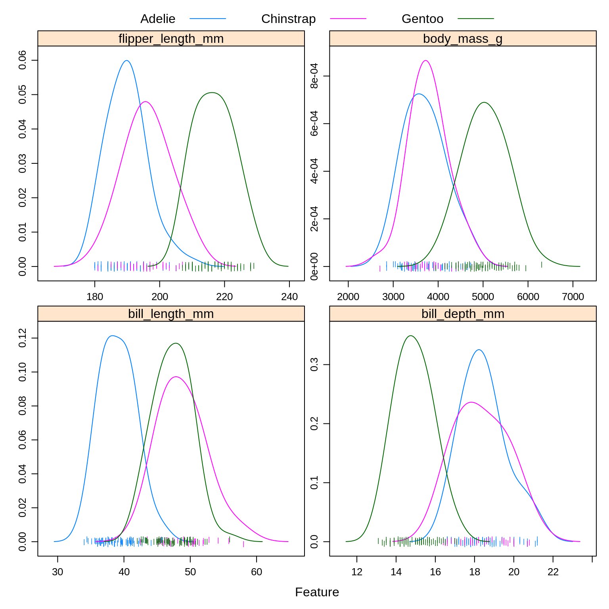
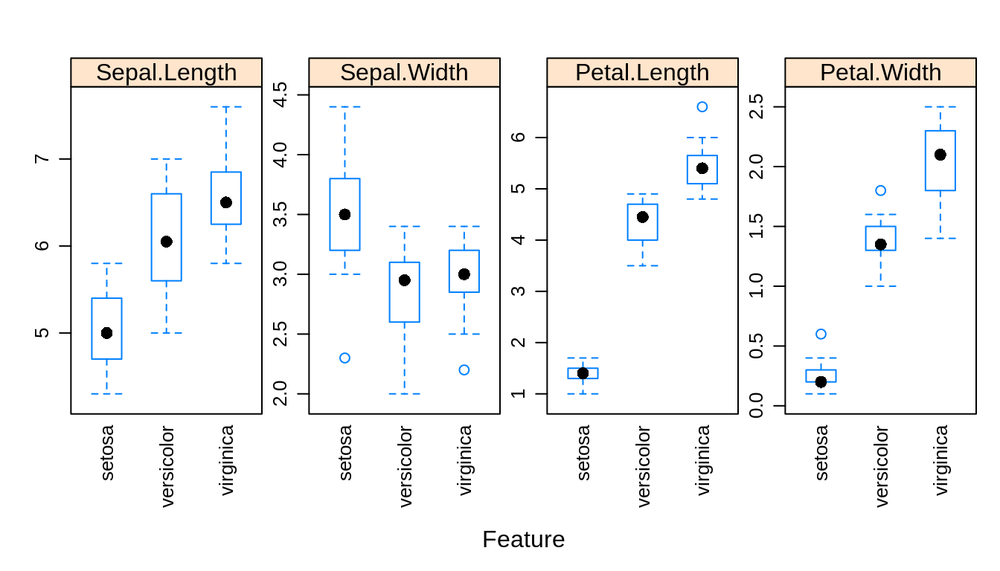
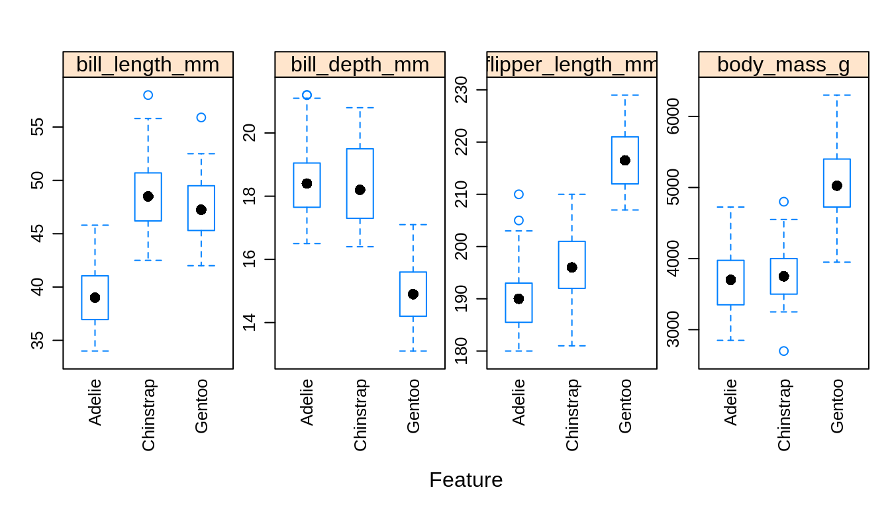

Chapter 10 Generative Models
In this chapter, we continue our discussion of classification methods. We introduce three new methods, each a generative method.
Specifically, we will discuss:
- How generative methods are different than discriminative methods like logistic regression.
- How generative methods model the joint probability, \(p(\boldsymbol{x}, y)\), often by assuming some distribution for the conditional distribution of \(\boldsymbol{X}\) given \(Y\), \(f(\boldsymbol{x} \mid y)\).
- How to use Bayes theorem to classify according to \(p(y \mid \boldsymbol{x})\) as compared to discriminative methods such as logistic regression directly model this conditional directly.
Two potential additional readigns:
This chapter is currently under construction. While it is being developed, the following links to the STAT 432 course notes.
10.1 R Setup and Source
library(palmerpenguins) # access to data
library(tibble) # data frame printing
library(MASS) # fitting lda and qda
library(klaR) # fitting naive bayes
library(knitr) # creating tables
library(kableExtra) # styling tablesRecall that the Welcome chapter contains directions for installing all necessary packages for following along with the text. The R Markdown source is provided as some code, mostly for creating plots, has been suppressed from the rendered document that you are currently reading.
- R Markdown Source:
generative.Rmd
Each of the methods in this chapter will use Bayes theorem to build a classifier.
\[ p_k(\boldsymbol{x}) = P(Y = k \mid \boldsymbol{X} = \boldsymbol{x}) = \frac{\pi_k \cdot f_k(\boldsymbol{x})}{\sum_{g = 1}^{G} \pi_g \cdot f_g(\boldsymbol{x})} \]
We call \(p_k(\boldsymbol{x})\) the posterior probability, which we will estimate then use to create classifications. The \(\pi_g\) are called the prior probabilities for each possible classes \(g\). That is, \(\pi_g = P(Y = g)\), unconditioned on \(\boldsymbol X\). (Here, there are \(G\) possible classes, denoted \(1, 2, \ldots G\). We use \(k\) to refer to a particular class.) The \(f_g(x)\) are called the likelihoods, which are indexed by \(g\) to denote that they are conditional on the classes. The denominator is often referred to as a normalizing constant.
The methods will differ by placing different modeling assumptions on the likelihoods, \(f_g(\boldsymbol x)\). For each method, the priors could be learned from data or pre-specified.
For each method, classifications are made to the class with the highest estimated posterior probability, which is equivalent to the class with the largest
\[ \log(\hat{\pi}_k \cdot \hat{f}_k(\boldsymbol{x})). \]
By substituting the corresponding likelihoods, simplifying, and eliminating unnecessary terms, we could derive the discriminant function for each.
To illustrate these new methods, we return to the Palmer penguins data, which you may remember has three classes. After a train-test and estimation-validation split, we create a number of plots to refresh our memory. Note that these splits are a bit odd in terms of proprotions. This is for illustrative purposes only.
# set seed
set.seed(2)
# train-test split
trn_idx = sample(nrow(peng), size = trunc(0.50 * nrow(peng)))
peng_trn = peng[trn_idx, ]
peng_tst = peng[-trn_idx, ]
# train-test split
est_idx = sample(nrow(peng_trn), size = trunc(0.50 * nrow(peng_trn)))
peng_est = peng_trn[est_idx, ]
peng_val = peng_trn[-est_idx, ]caret::featurePlot(
x = peng_trn[, c("bill_length_mm",
"bill_depth_mm",
"flipper_length_mm",
"body_mass_g")],
y = peng_trn$species,
plot = "density",
scales = list(
x = list(relation = "free"),
y = list(relation = "free")
),
adjust = 1.5,
pch = "|",
layout = c(2, 2),
auto.key = list(columns = 3)
)
caret::featurePlot(
x = peng_trn[, c("bill_length_mm",
"bill_depth_mm",
"flipper_length_mm",
"body_mass_g")],
y = peng_trn$species,
plot = "ellipse",
auto.key = list(columns = 3)
)
caret::featurePlot(
x = peng_trn[, c("bill_length_mm",
"bill_depth_mm",
"flipper_length_mm",
"body_mass_g")],
y = peng_trn$species,
plot = "box",
scales = list(y = list(relation = "free"),
x = list(rot = 90)),
layout = c(4, 1)
)
Especially based on the pairs plot, we see that it should not be too difficult to find a good classifier. Because it is so easy will we create models using only bill_length_mm and flipper_length_mm so that they will make some errors that we can discuss.
Notice that we use caret::featurePlot to access the featurePlot() function without loading the entire caret package.
10.2 Linear Discriminant Analysis
Linear Discriminant Analysis, LDA, assumes that the features are multivariate normal conditioned on the classes.
\[ \boldsymbol{X} \mid Y = k \sim N(\boldsymbol{\mu}_k, \boldsymbol\Sigma) \]
\[ f_k(\boldsymbol{x}) = \frac{1}{(2\pi)^{p/2}|\boldsymbol\Sigma|^{1/2}}\exp\left[-\frac{1}{2}(\boldsymbol x - \boldsymbol\mu_k)^{\prime}\boldsymbol\Sigma^{-1}(\boldsymbol x - \boldsymbol\mu_k)\right] \]
Notice that \(\boldsymbol\Sigma\) does not depend on \(k\), that is, we are assuming the same \(\Sigma\) for each class. We then use information from all the classes to estimate \(\boldsymbol\Sigma\).
## Call:
## lda(species ~ bill_length_mm + flipper_length_mm, data = peng_est)
##
## Prior probabilities of groups:
## Adelie Chinstrap Gentoo
## 0.4457831 0.1566265 0.3975904
##
## Group means:
## bill_length_mm flipper_length_mm
## Adelie 39.08108 190.0000
## Chinstrap 48.32308 194.9231
## Gentoo 46.75152 215.9697
##
## Coefficients of linear discriminants:
## LD1 LD2
## bill_length_mm 0.03300363 -0.4289076
## flipper_length_mm 0.18519532 0.1087346
##
## Proportion of trace:
## LD1 LD2
## 0.7984 0.2016Here we see the estimated \(\hat{\pi}_k\) and \(\hat{\boldsymbol\mu}_k\) for each class.
## [1] TRUE## [1] "class" "posterior" "x"## [1] Gentoo Adelie Adelie Adelie Adelie Gentoo Chinstrap
## [8] Adelie Adelie Gentoo
## Levels: Adelie Chinstrap Gentoo## Adelie Chinstrap Gentoo
## 1 3.106976e-03 6.281033e-06 9.968867e-01
## 2 9.988138e-01 1.185724e-03 4.300706e-07
## 3 9.998919e-01 1.066133e-04 1.517790e-06
## 4 9.828029e-01 1.719710e-02 5.064431e-10
## 5 8.222950e-01 2.184971e-03 1.755200e-01
## 6 7.514839e-05 7.801291e-06 9.999171e-01
## 7 3.723269e-02 9.627490e-01 1.830132e-05
## 8 9.966890e-01 8.415898e-06 3.302621e-03
## 9 9.999794e-01 2.016388e-05 4.025448e-07
## 10 3.830348e-09 1.184353e-05 9.999882e-01As we should come to expect, the predict() function operates in a new way when called on an lda object. By default, it returns an entire list. Within that list class stores the classifications and posterior contains the estimated probability for each class.
peng_lda_est_pred = predict(peng_lda, peng_est)$class
peng_lda_val_pred = predict(peng_lda, peng_val)$classWe store the predictions made on the estimation and validatino sets.
## [1] 0.01204819## [1] 0.08433735As expected, LDA performs well on both the estimation and validation data.
## actual
## predicted Adelie Chinstrap Gentoo
## Adelie 31 2 0
## Chinstrap 1 16 0
## Gentoo 2 2 29Looking at the validation set, we see that we are perfectly within the Gentoos.
peng_lda_flat = lda(species ~ bill_length_mm + flipper_length_mm,
data = peng_est, prior = c(1, 1, 1) / 3)
peng_lda_flat## Call:
## lda(species ~ bill_length_mm + flipper_length_mm, data = peng_est,
## prior = c(1, 1, 1)/3)
##
## Prior probabilities of groups:
## Adelie Chinstrap Gentoo
## 0.3333333 0.3333333 0.3333333
##
## Group means:
## bill_length_mm flipper_length_mm
## Adelie 39.08108 190.0000
## Chinstrap 48.32308 194.9231
## Gentoo 46.75152 215.9697
##
## Coefficients of linear discriminants:
## LD1 LD2
## bill_length_mm -0.05945813 -0.42604662
## flipper_length_mm 0.20416030 0.06662646
##
## Proportion of trace:
## LD1 LD2
## 0.6858 0.3142Instead of learning (estimating) the proportion of the three species from the data, we could instead specify them ourselves. Here we choose a uniform distributions over the possible species. We would call this a “flat” prior.
peng_lda_flat_est_pred = predict(peng_lda_flat, peng_est)$class
peng_lda_flat_val_pred = predict(peng_lda_flat, peng_val)$class## [1] 0.01204819## [1] 0.07228916This actually gives a better test accuracy! In practice, this could be useful if you have prior knowledge about the future proportions of the response variable.
##
## Adelie Chinstrap Gentoo
## 0.4096386 0.2409639 0.3493976## Adelie Chinstrap Gentoo
## 0.4457831 0.1566265 0.3975904Looking at the above, we see this makes sense. In the validation data, the proportions of the classes are closer to flat. However, you should not use this information to choose your prior in practice. That would be cheating. If you have other information that suggests you should try this, then go right ahead.
10.3 Quadratic Discriminant Analysis
Quadratic Discriminant Analysis, QDA, also assumes that the features are multivariate normal conditioned on the classes.
\[ \boldsymbol X \mid Y = k \sim N(\boldsymbol\mu_k, \boldsymbol\Sigma_k) \]
\[ f_k(\boldsymbol x) = \frac{1}{(2\pi)^{p/2}|\boldsymbol\Sigma_k|^{1/2}}\exp\left[-\frac{1}{2}(\boldsymbol x - \boldsymbol\mu_k)^{\prime}\boldsymbol\Sigma_{k}^{-1}(\boldsymbol x - \boldsymbol\mu_k)\right] \]
Notice that now \(\boldsymbol\Sigma_k\) does depend on \(k\), that is, we are allowing a different \(\boldsymbol\Sigma_k\) for each class. We only use information from class \(k\) to estimate \(\Sigma_k\).
## Call:
## qda(species ~ bill_length_mm + flipper_length_mm, data = peng_est)
##
## Prior probabilities of groups:
## Adelie Chinstrap Gentoo
## 0.4457831 0.1566265 0.3975904
##
## Group means:
## bill_length_mm flipper_length_mm
## Adelie 39.08108 190.0000
## Chinstrap 48.32308 194.9231
## Gentoo 46.75152 215.9697Here the output is similar to LDA, again giving the estimated \(\hat{\pi}_k\) and \(\hat{\boldsymbol\mu}_k\) for each class. Like lda(), the qda() function is found in the MASS package.
Consider trying to fit QDA again, but this time with a very small estimation set. This will cause an error because there are not enough observations within each class to estimate the large number of parameters in the \(\boldsymbol\Sigma_k\) matrices. This is less of a problem with LDA, since all observations, no matter the class, are being use to estimate the shared \(\boldsymbol\Sigma\) matrix.
peng_qda_est_pred = predict(peng_qda, peng_est)$class
peng_qda_val_pred = predict(peng_qda, peng_val)$classThe predict() function operates the same as the predict() function for LDA.
## [1] 0.01204819## [1] 0.09638554## actual
## predicted Adelie Chinstrap Gentoo
## Adelie 30 1 0
## Chinstrap 1 16 0
## Gentoo 3 3 29Here we see that QDA has similar performance to LDA, but a little worse. This isn’t too surprising as based on the plots, the covariance within each of the classes seems similar. QDA may be too flexible here. Since QDA is a more flexible model than LDA (it has many more parameters), QDA is more likely to overfit than LDA.
Also note that, QDA creates quadratic decision boundaries, while LDA creates linear decision boundaries. We could also add quadratic terms to LDA to allow it to create quadratic decision boundaries.
10.4 Naive Bayes
Naive Bayes comes in many forms. With only numeric features, it often assumes a multivariate normal conditioned on the classes, but a very specific multivariate normal.
\[ {\boldsymbol X} \mid Y = k \sim N(\boldsymbol\mu_k, \boldsymbol\Sigma_k) \]
Naive Bayes assumes that the features \(X_1, X_2, \ldots, X_p\) are independent given \(Y = k\). This is the “naive” part of naive Bayes. The Bayes part is nothing new. Since \(X_1, X_2, \ldots, X_p\) are assumed independent, each \(\boldsymbol\Sigma_k\) is diagonal, that is, we assume no correlation between features. Independence implies zero correlation.
This will allow us to write the (joint) likelihood as a product of univariate distributions. In this case, the product of univariate normal distributions instead of a (joint) multivariate distribution.
\[ f_k(\boldsymbol x) = \prod_{j = 1}^{p} f_{kj}(\boldsymbol x_j) \]
Here, \(f_{kj}(\boldsymbol x_j)\) is the density for the \(j\)-th feature conditioned on the \(k\)-th class. Notice that there is a \(\sigma_{kj}\) for each feature for each class.
\[ f_{kj}(\boldsymbol x_j) = \frac{1}{\sigma_{kj}\sqrt{2\pi}}\exp\left[-\frac{1}{2}\left(\frac{x_j - \mu_{kj}}{\sigma_{kj}}\right)^2\right] \]
When \(p = 1\), this version of naive Bayes is equivalent to QDA.
## grouping
## Adelie Chinstrap Gentoo
## 0.4457831 0.1566265 0.3975904## $bill_length_mm
## [,1] [,2]
## Adelie 39.08108 2.560907
## Chinstrap 48.32308 2.120595
## Gentoo 46.75152 2.768474
##
## $flipper_length_mm
## [,1] [,2]
## Adelie 190.0000 4.960959
## Chinstrap 194.9231 3.729646
## Gentoo 215.9697 5.849599Many packages implement naive Bayes. Here we choose to use NaiveBayes() from the package klaR. The output from peng_nb$tables gives the mean and standard deviation of the normal distribution for each feature in each class. Notice how these mean estimates match those for LDA and QDA above.
## [1] Gentoo Adelie Adelie Adelie Adelie Gentoo
## Levels: Adelie Chinstrap Gentoo## Adelie Chinstrap Gentoo
## [1,] 1.617414e-03 1.961748e-05 9.983630e-01
## [2,] 9.999804e-01 1.929359e-05 2.701873e-07
## [3,] 9.999974e-01 2.282747e-06 2.994029e-07
## [4,] 9.999981e-01 1.857175e-06 2.992396e-09
## [5,] 8.417837e-01 1.069401e-02 1.475223e-01
## [6,] 3.308450e-06 2.470560e-06 9.999942e-01peng_nb_est_pred = predict(peng_nb, peng_est)$class
peng_nb_val_pred = predict(peng_nb, peng_val)$class## Warning in FUN(X[[i]], ...): Numerical 0 probability for all classes with
## observation 46## [1] 0.01204819## [1] 0.1325301## actual
## predicted Adelie Chinstrap Gentoo
## Adelie 31 2 0
## Chinstrap 1 12 0
## Gentoo 2 6 29Here we see worse performance again.
| Method | Train Error | Validation Error |
|---|---|---|
| LDA | 0.0120482 | 0.0843373 |
| LDA, Flat Prior | 0.0120482 | 0.0722892 |
| QDA | 0.0120482 | 0.0963855 |
| Naive Bayes | 0.0120482 | 0.1325301 |
Summarizing the results, we see that Naive Bayes is the worst of LDA, QDA, and NB for this data. This isn’t surprising as there is clear dependence within the features. So why should we care about naive Bayes?
The strength of Naive Bayes comes from its ability to handle a large number of features, \(p\), even with a limited sample size \(n\). Even with the naive independence assumption, Naive Bayes works rather well in practice. Also because of this assumption, we can often train naive Bayes where LDA and QDA may be impossible to train because of the large number of parameters relative to the number of observations.
Here naive Bayes doesn’t get a chance to show its strength since LDA and QDA already perform well, and the number of features is low. The choice between LDA and QDA is mostly down to a consideration about the amount of complexity needed. (Also note that complexity within these models can also be altered by changing the features used. More features generally means a more flexible model.)
10.5 Categorical Features
So far, we have assumed that all features are numeric. What happens with categorical features? Let’s add the sex variable which is categorical.
## $bill_length_mm
## [,1] [,2]
## Adelie 39.08108 2.560907
## Chinstrap 48.32308 2.120595
## Gentoo 46.75152 2.768474
##
## $flipper_length_mm
## [,1] [,2]
## Adelie 190.0000 4.960959
## Chinstrap 194.9231 3.729646
## Gentoo 215.9697 5.849599
##
## $sex
## var
## grouping female male
## Adelie 0.5405405 0.4594595
## Chinstrap 0.4615385 0.5384615
## Gentoo 0.5757576 0.4242424Naive Bayes makes a somewhat obvious and intelligent choice to model the categorical variable as a multinomial. It then estimates the probability parameters of a multinomial distribution.
## Call:
## lda(species ~ bill_length_mm + flipper_length_mm + sex, data = peng_est)
##
## Prior probabilities of groups:
## Adelie Chinstrap Gentoo
## 0.4457831 0.1566265 0.3975904
##
## Group means:
## bill_length_mm flipper_length_mm sexmale
## Adelie 39.08108 190.0000 0.4594595
## Chinstrap 48.32308 194.9231 0.5384615
## Gentoo 46.75152 215.9697 0.4242424
##
## Coefficients of linear discriminants:
## LD1 LD2
## bill_length_mm 0.2652470 -0.4650328
## flipper_length_mm 0.1800828 0.1383358
## sexmale -1.8987355 0.7946053
##
## Proportion of trace:
## LD1 LD2
## 0.8527 0.1473LDA (and QDA) however creates dummy variables, here with male as the reference level, then continues to model them as normally distributed. Not great, but better then not using a categorical variable.